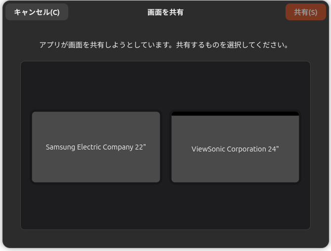

VS Code 1.122.0 の不具合に関する覚え書き【解消済み】

【2026-05-30 追記】
今回の不具合は 1.122.1 で修正されたようだ。
APT で code を保留にしている場合は
$ sudo apt-mark unhold code
$ sudo apt update
$ sudo apt upgrade
とすればスムーズに更新できるだろう。
今回のこれは Linux ユーザの評判をかなり落としたんじゃないかねぇ。 起動していきなり画面共有の許可ダイアログが出るのは流石に拙かった。 私もビビったもん。
Issue スレッドも罵詈雑言の嵐だったし。
【2026-05-29 追記】
似た isuue が複数立ったのでまとめられたようだ。 現在生きてる issue はこっち。
原因らしきものが見つかったようだ。 それにしても，罵詈雑言の嵐だな（笑）
👋 This is caused by a new flow for reporting vscode issues (gated behind a setting issueReporter.wizard.enabled). Unfortunately there is a small snippet of code that executes outside the gated setting. Despite us having a test plan item for linux, this has slipped our testing because the test plan item was mistakenly done on WSL and not on a proper linux distribution. I apologize for this regression. We unfortunately cannot “pause”/“freeze” an update on linux due to the way package managers work, so we are now working on a fix and a .1 release.
というわけで，今回の現象は別のバグが発生して問題を報告しようとし，その際に画面共有の許可を求めるコードが実行されてしまうことが原因だったようだ。 なんだそれ？ ヤバくね？
とにかく，今回のケースについては修正されるまでは 1.121.0 にダウングレードしておくのが正解のようだ。
VS Code 1.122.0 の不具合に関する覚え書き 【2026-05-28】
先程 VS Code 1.122.0 がリリースされ，自宅マシンの Ubuntu 環境に APT でアップデートしたのだが，起動時に変なダイアログが出るようになった。

{kind=link}
どうもこれは既に issue として上がっているようだ。
- [Bug]: Unwanted xdg-desktop-portal screen sharing dialog on startup (Wayland, Electron 39) · Issue #317955 · microsoft/vscode
- getDisplayMedia called at workbench boot → KDE screen-share dialog on every new window · Issue #317948 · microsoft/vscode
- Last update asks for screen sharing permission every time · Issue #318697 · microsoft/vscode
これを回避する方法として2つ挙がっている。
- Wayland から X11 (XWayland) に切り替える
- ひとつ前のバージョン 1.121.0 にダウングレードする
1 は環境変数か起動時引数で指定する方法がある。 環境変数を指定する方法はこれ。
$ ELECTRON_OZONE_PLATFORM_HINT=x11 code
起動時引数の指定は ~/.vscode/argv.json ファイルに以下の記述を追加するとよい。
{
...
// Temporary bug fix for v1.122.0 (disabling Wayland)
"ozone-platform": "x11"
}
手元の環境で試してみたが，この方法はうまく行かなかった。
というわけでバージョンダウンする。
$ sudo apt install code=1.121.0-1779186519
$ sudo apt-mark hold code
2行目は apt upgrade を保留するコマンドで，これを解除するには以下のコマンドを実行する。
$ sudo apt-mark unhold code
Issue を眺める限り単純じゃないっぽいが，次バージョンで修正されることを期待しよう。
【おまけ】 Agents Window
VS Code 1.120 から Agents Window が追加された。
- VS Code 1.120リリース、Agentsウィンドウの安定版向けプレビューを開始 | gihyo.jp
- VS Codeの「Agents window」とは？複数AIエージェントを並列で動かす新機能をやさしく解説します｜しゃり
複数のパッケージを並列に弄ることが多いので，早速試してみたが，これって既存の AI エージェントとのセッションを他セッションに引き継げないのな。 どうにかならないか GitHub Copilot に訊いたが，セッション履歴のインポート・エクスポート機能はあるが（つまりバックアップ・リストアはできる？），他セッションに引き継いで fork することはできないと言われた。 できることは AI に引き継ぎ資料を書かせて，それを別のセッションに読み込ませるくらいだそうな1。
セッションの複製や fork は必須の機能だと思うんだけど，なんでないの？ やっぱそろそろ VS Code や GitHub Copilot は卒業すべきかねぇ。 だからといって，個人利用で Claude とか使う気はないが。
-
この辺の話を Mastodon/Bluesky で愚痴ったのだが Claude Code などは引き継ぎする方法があるらしい（裏技っぽいけど）。あと「ZedのMCPサーバでコンテキスト共有したい」のような運用をされてる方もいると教えてもらった。 ↩︎